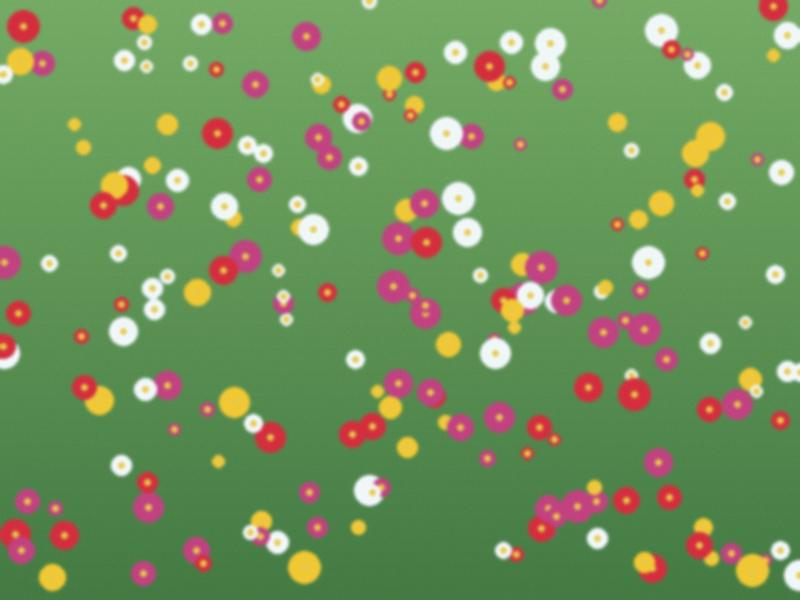

Archive for the ‘seedling’ Category
Seeds, expensive
The seed packets at the bazaar cost more than last year, and half have no name. I asked a woman where her seeds came from. She said "from my sister". I bought four packets. Two germinated.
This year I will save my own tomato seeds from the best fruit in September, dry on a paper towel, and write the year on the envelope. Granny has done this since 1962. Compare On apricots and patience: patience again.
Kyzyl-Adyr place names
Collecting the names people use for places in town that are on no map: "the hot pipe" (where the heating main crosses the ditch and the snow never stays), "the Bulgarian" (a shop, no idea why), "the old cinema" (it was never a cinema). More to come.
What sleeps
In January the garden does nothing, which is its work. The trees are sleeping, the roots are sleeping, the earth in the beds is under snow. I walk round the yard in Granny's felt boots and write down what I see: footprints of a cat, the shape of the vines against the wall, icicles on the ditch.
Idea for spring: a map of the yard, every tree with its name and age. Start with Grafting, as my grandfather did it.
Heat
Thirty-eight degrees in the yard at four o'clock. The leaves on the tomatoes fold in the afternoon like hands. The water turn came at night, I stood with a torch and a shovel and thought of Grandfather. The ditch smelled of mint and mud.
I have no solution, only an observation: the plants do not complain. See Water turns.
The frost of 2008
Granny says the spring frost of 2008 "killed the flowers in one night" and there were no apricots in the whole district that year. I can't find it written anywhere. Anyone from the Kara-Buura who remembers, write to me.
The garden has a wall now
Since 13 October these pages open only for people inside Irad. My friends in Bishkek wrote that the garden says "no connection" for them. I don't know for how long. I print the notes for them and send photographs of the printout, which is not the same thing as a link, but is a bit like a letter, and I like it.
Everything here still grows. It grows with fewer visitors, like the real one in winter. See Water turns.
A window box in Talas

The window box, third week of May.I rent a flat on the third floor with a window that faces south. Granny said a person without a bit of earth is half a person, so: one window box, 80 cm, soil from a sack from the bazaar (6 som), mint, two tomatoes, basil. The mint is winning.
The tomatoes are the same variety as in the yard in Kyzyl-Adyr, from Granny's seed. Compare in August. See On apricots and patience.